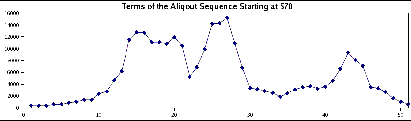

|
|
|
| Research |
Papers
- Efficient realization of nonzero spectra by polynomial matrices (Undergraduate Thesis, 2010)
N. McNew and N. Ormes, Involve, 8 (2015), 1-24.
- Radically weakening the Lehmer and Carmichael conditions
N. McNew, International Journal of Number Theory, 9 (2013), 1215-1224.
- On sets of integers which contain no three terms in geometric progression
N. McNew, Mathematics of Computation, 84 (2015), 2893-2910.
- Geometric-progression-free sets over quadratic number fields (SMALL REU 2014)
A. Best, K. Huan, N. McNew,
S. Miller
, J. Powell, K. Tor, and M. Weinstein, The Royal Society of Edinburgh Proceedings A, 147 (2017), 245-262.
- Popular values of the largest prime divisor function
N. McNew. Experimental Mathematics, 26 (2017), 210-224.
- Ramsey theory problems over the integers: avoiding generalized progressions (SMALL REU 2014)
A. Best, K. Huan, N. McNew, S. Miller, J. Powell, K. Tor, and M. Weinstein, in Combinatorial and Additive Number Theory II. CANT 2015, CANT 2016. Nathanson, M. (ed) Springer Proceedings in Mathematics & Statistics, 220 (2017). Springer, New York, NY, 39-52.
- Infinitude of k-Lehmer numbers which are not Carmichael
N. McNew and T. Wright, International Journal of Number Theory, 12 (2016), 1863-1869.
- Numbers divisible by a large shifted prime and large torsion subgroups of CM elliptic curves
N. McNew, P. Pollack, and C. Pomerance, Int. Math. Res. Not. IMRN, 18 (2017), 5525-5553.
- Subsets of F_q[x] free of 3-term geometric progressions (SMALL REU 2015)
M. Asada, E. Fourakis, S. Manski, N. McNew, S. Miller and G. Moreland, Finite Fields and Their Applications, 44 (2017), 135-147.
- When sets can and cannot have sum-dominant subsets
H. Chu, N. McNew, S. Miller, Victor Xu and Sean Zhang, Journal of Integer Sequences, 21 (2018) Article 18.8.2.
- Random multiplicative walks on the residues modulo n
N. McNew, Mathematika, 63 (2017), 602-621.
- The convex hull of the prime number graph
N. McNew, in Irregularities in the Distribution of Prime Numbers Pintz J., Rassias M. (eds) Springer, Cham (2018), 125-141.
- Avoiding 3-term geometric progressions in non-commutative settings (SMALL REU 2015)
M. Asada, E. Fourakis, S. Manski, N. McNew, S. Miller and G. Moreland, Submitted for publication.
- Counting Primitive Subsets and other statistics of the divisor graph of {1,2,... n}
N. McNew, Submitted for publication.
- Primitive and geometric-progression-free sets without large gaps
N. McNew, Acta Arithmetica, 192 (2020), 95-104.
- Counting pattern-avoiding integer partitions
J. Bloom and N. McNew, To appear in The Ramanujan Journal.
- On the size of primitive sets in function fields
A. Gómez-Colunga, C. Kavaler, N. McNew and M. Zhu, Finite Fields and their Applications, 64 (2020), 101658.
- On the Erdős primitive set conjecture in function fields (See also the related code.)
A. Gómez-Colunga, C. Kavaler, N. McNew and M. Zhu
- Unknotted Cycles
C. Cornwell and N. McNew
Talks(Out of date)
- Efficient Realization of Nonzero Spectra by Polynomial Matrices
University of Denver Department Colloquium (May 2010)
Dartmouth Graduate Student Seminar (November 2010)
- When does each prime dividing φ(n) also divide n - 1
Quebec/Maine Number Theory Conference (September 2012)
Canadian Math Society Winter Meeting (December 2012)
- Sets of integers which contain no three terms in geometric progression
Maine/Quebec Number Theory Conference (October 2013)
INTEGERS Conference (October 2013)
West Coast Number Theory Conference (December 2014)
Joint Math Meetings (January 2014)
SERMON (March 2014)
Williams College Department Colloquium (July 2014)
- Popular values of the largest prime divisor function
Combinatorial and Additive Number Theory (May 2014)
Meeting of the Canadian Number Theory Association (June 2014)
Quebec/Maine Number Theory Conference (September 2014)
University of Maine Department Colloquium (October 2014)
Other
- The Second Carib War, N. McNew, Rocky Mountain Undergraduate Review 2 (2009)
Research in history done while I was an undergraduate on an island war which played a small role in the greater French Revolution.
- Random Walks with Restarts, 3 Examples
A survey article I wrote for a course at Dartmouth which corrects an example given in On Playing Golf With Two Balls by Dumitriu, and Tetali, and Winkler.
It also presents a new heuristic argument for the asymptotic hitting time with restarts on a 2-D lattice.

|
|